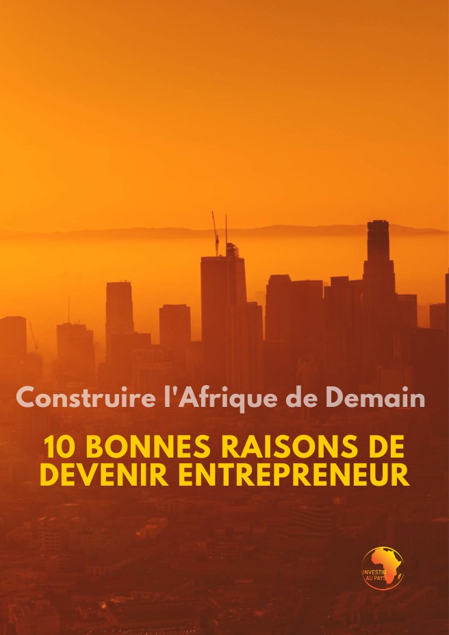

Management et entrepreneuriat ↗
10 bonnes raisons de devenir entrepreneur





Carte d’identité
- Auteur
- Non signé dans le PDF
- Genre
- Savoirs
- Sous-genre
- Management et entrepreneuriat
- Éditeur
- Initiative Construire l’Afrique de Demain
- Parution de l’édition
- 2019
- ISBN
- Non confirmé
- Langue de l’édition
- Français
- Fichier du site
- PDF · 28 pages
Livret de 2019. Le PDF ne porte ni nom d’auteur ni ISBN. Le nom de Philippe Simo renvoie à une notice homonyme.
 Résumé du livreL’essentiel en quelques lignes
Résumé du livreL’essentiel en quelques lignes
Ce livret invite à se demander ce que l’on cherche dans l’entrepreneuriat. Ses motivations vont de l’autonomie au plaisir de relever un défi, en passant par l’envie de rendre un service ou d’inspirer d’autres personnes. Chaque section part d’une raison de se lancer.
 Sections11 entrées
Sections11 entrées
-
01 Se demander pourquoi entreprendrePDF p. 4
Le livret interpelle aussi bien une personne salariée qu’une personne étudiante. Il l’invite à partir de sa propre trajectoire avant d’évaluer ce qu’elle est prête à changer.
Lire à cette page ↗ -
02 S’écarter d’un parcours tracéPDF p. 6
L’image de deux lions oppose la stabilité d’une routine au risque de chercher soi-même ses ressources. L’auteur présente le goût de l’aventure comme l’une des motivations possibles.
Lire à cette page ↗ -
03 Donner une direction à son travailPDF p. 8
Le livret part du sentiment de dépendre de décisions prises par d’autres. Monter une activité devient une manière de rapprocher son travail de ses propres objectifs.
Lire à cette page ↗ -
04 Agir sur son environnementPDF p. 10
L’entrepreneuriat est présenté comme une façon d’agir sur un problème concret. Le projet prend son intérêt dans ce qu’il peut changer autour de lui.
Lire à cette page ↗ -
05 Gagner en autonomiePDF p. 12
Cette section met en avant la possibilité de décider de sa direction et de ses priorités. Elle associe cette liberté aux responsabilités du porteur de projet.
Lire à cette page ↗ -
06 Donner envie à d’autres d’essayerPDF p. 14
L’exemple d’une personne qui se lance peut rendre un parcours plus imaginable pour son entourage. Le livret insiste sur cet effet d’entraînement.
Lire à cette page ↗ -
07 Faire d’un intérêt son métierPDF p. 16
La section relie création d’activité et envie de consacrer son temps à un sujet qui compte. Elle présente la passion comme une source d’énergie pour poursuivre le projet.
Lire à cette page ↗ -
08 Choisir un défiPDF p. 18
Les obstacles sont décrits comme des occasions d’apprendre et de mesurer sa progression. Le texte souligne l’attrait que ce type de défi exerce sur certains profils.
Lire à cette page ↗ -
09 Apporter quelque chose aux autresPDF p. 20
La satisfaction des personnes qui utilisent un produit ou un service devient ici une raison d’entreprendre. La réussite se mesure aussi par l’utilité ressentie.
Lire à cette page ↗ -
10 Grandir en construisant son projetPDF p. 22
Prendre des décisions et traverser des imprévus oblige à apprendre de nouvelles choses. Le livret présente ce changement personnel comme un bénéfice du parcours.
Lire à cette page ↗ -
11 Trouver sa propre motivationPDF p. 24
La dernière section ouvre la liste et laisse à chacun la place de formuler sa raison. Elle prolonge la question posée au début du livret.
Lire à cette page ↗
Les fils du livre

Les étoiles venues d’ailleurs
Goodreads
Édition 2020 · PDF 2019Lire les avis sur Goodreads ↗Relevé du 11 novembre 2026
Mon carnet de lecture
Mes étoiles
0 critique
Ma critique sur ce livre ↗Les sources et références ↘
- Guichet Jeunesse — notice du livret daté 2019 ↗
- PDF fourni · contenu et mentions éditoriales ↗
- Source de la note extérieure ↗ · Édition Kindle de 2020 ; le PDF fourni est daté 2019.